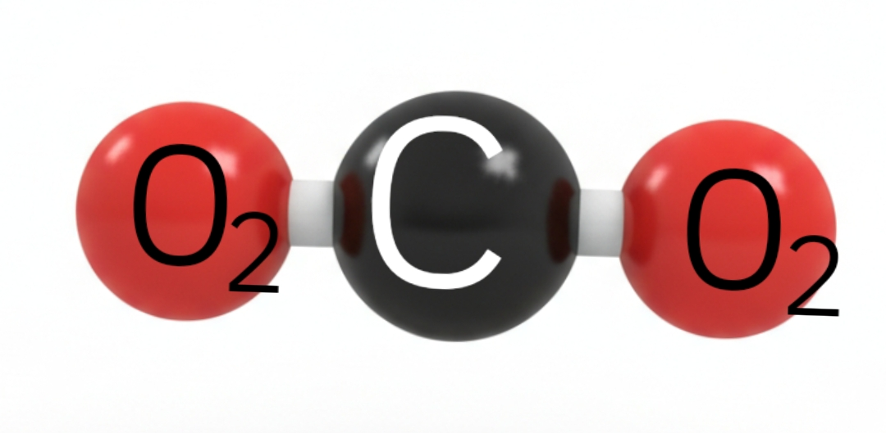

Our Facility
This is where content managed by the CMS will eventually appear. For now, here are the images you specified:


Managed with Decap CMS
This is where content managed by the CMS will eventually appear. For now, here are the images you specified:
